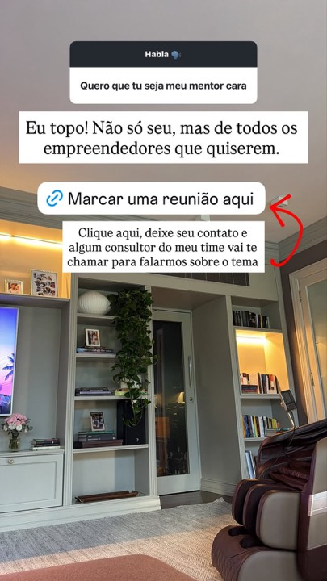
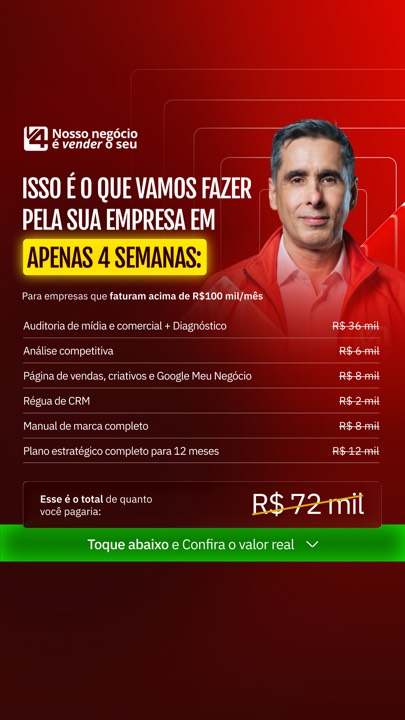
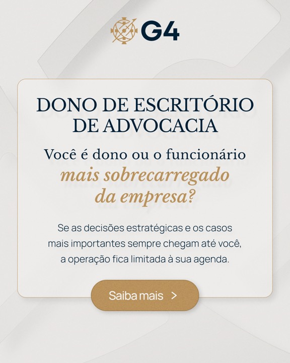

Leitor de Conteúdo
06/10/2026 · 26 perfis · 808 anúncios no topo
Leitura do dia
A pauta do dia é a Casas Bahia encolhendo, com estoque 40% menor e 4,6 mil funcionários a menos. É o tipo de react que já deu 1,67 milhão pro Ricardo.
- A perícia da recuperação judicial da Casas Bahia saiu em 4 portais nas últimas 48 horas. No levantamento de agosto, o react do Ricardo sobre a Casas Bahia fechando 298 lojas fez 1,67 milhão, o terceiro maior resultado dele.
- A Reforma Tributária virou pauta de pequeno empresário. 'Para o Simples Nacional, a decisão começa agora' saiu em 3 portais, e a Receita Federal publicou o balanço de quem já escolheu entre o Simples e o regime novo do IBS e da CBS.
- Nos concorrentes, o que viralizou sem tocar em política foram frases curtas de negócio feitas pra compartilhar. Caio Carneiro fez 247 mil com 'Ande com pessoas com foco similar ao seu', 5,7x a mediana dele. Alfredo Soares fez 226 mil com 'Engolir sapo é um superpoder', 5,6x. O G4 fez 246 mil com 'Feliz Dia do Vendedor', 5,4x.
- O G4 está numa ofensiva coordenada de anúncios. Tallis, Alfredo Soares, G4 e Bruno Nardon lançaram criativos nos últimos 4 dias pro G4 Gestão e Estratégia e pro G4 Valley. O gancho central é a dependência do dono: 'quanto fatura se você sumir por 90 dias?'.
- Os Reels recentes do Ricardo com CTA de Black Friday ficaram abaixo da mediana dele, 0,75x e 0,96x. Os depoimentos de aluno foram de 1,8x a 3,4x.
O que fazer hoje
-
react
Casas Bahia: estoque 40% menor e 4,6 mil funcionários a menos
Gancho: “A Casas Bahia cortou 40% do estoque e 4,6 mil funcionários. Eu vivi o varejo de eletro por dentro e vou te mostrar o que esse número diz que ninguém tá falando.”
Formato: Print da manchete no fundo e Ricardo reagindo em pé, 45 a 60 segundos. Fecha com a lição pro dono de empresa pequena: estoque parado é dinheiro morto.
Por quê: A notícia saiu em 4 portais nas últimas 48 horas, a mais repercutida do dia no radar. React a notícia é o formato mais forte do Ricardo, e o react anterior sobre a Casas Bahia fez 1,67 milhão.
-
react
Reforma Tributária: a decisão do Simples Nacional é agora
Gancho: “Se a sua empresa é do Simples, tem uma decisão pra tomar agora que mexe no seu imposto de 2027. E a maioria dos donos nem sabe que ela existe.”
Formato: Ricardo com a manchete na tela, explicando em linguagem de dono de loja, 45 segundos. Termina mandando o empresário conversar com o contador essa semana.
Por quê: A pauta saiu em 3 portais e a Receita Federal publicou o balanço das opções entre o Simples e o regime novo do IBS e da CBS. Entre os concorrentes, só o Flávio Augusto tocou em imposto nos últimos 14 dias, e de forma genérica. Nenhum explicou a decisão do Simples.
-
reel
Faturar alto não é ter dinheiro no caixa
Gancho: “Essa empresa fatura 1,2 milhão por mês e fecha no vermelho. Sabe onde tá o erro? Em 90% das vendas dela.”
Formato: React ao caso que a Exame publicou, com o Ricardo explicando margem de marketplace, 45 a 60 segundos. Dá pra virar série 'Erro de dono'.
Por quê: A Exame postou hoje o caso da Ecarshop, que vende R$ 1,2 milhão por mês com 90% em marketplaces e mesmo assim fecha no vermelho. É uma dor que todo dono de varejo reconhece, e o Ricardo tem autoridade pra falar de margem.
-
anúncio
Responder o G4 no gancho da dependência do dono
Gancho: “Eu tinha mais de mil lojas e não conseguia tirar férias. Sabe por quê? Porque a empresa era eu.”
Formato: Vídeo de 30 a 45 segundos, Ricardo olhando pra câmera em escritório ou loja. Abre com a confissão e fecha com o convite pra imersão.
Por quê: O G4 colocou 'quanto fatura se você sumir por 90 dias?' em pelo menos 5 anúncios novos na semana, com o Tallis em 1º e 2º no topo de verba. Eles provam a dor com uma pergunta. O Ricardo prova com a própria história.
-
reel
Frase curta de vendedor, feita pra compartilhar
Gancho: “Vendedor bom não empurra produto. Ele descobre o que o cliente ia comprar de qualquer jeito e chega primeiro.”
Formato: Corte seco de 15 a 20 segundos, uma frase só, legenda grande na tela. CTA 'manda pro seu time de vendas'.
Por quê: Os virais de negócio da semana foram frases curtas e compartilháveis: Caio Carneiro com 247 mil, 5,7x a mediana; Alfredo Soares com 226 mil, 5,6x; G4 com 'Feliz Dia do Vendedor', 246 mil, 5,4x. O único post curto do Ricardo no mês, 'faz do limão uma limonada', ficou na mediana dele. A diferença é o tema: os virais falam de venda e relação, com um pedido claro pra compartilhar.
-
anúncio
Black Friday contada como história, não como CTA
Gancho: “Eu vendi 1 bilhão de reais em um único dia. E não foi dando desconto.”
Formato: Storytelling de 45 a 60 segundos, com imagens de arquivo da Ricardo Eletro se tiver. O CTA 'BLACK' vai só na legenda.
Por quê: Os dois Reels recentes que abrem vendendo Black Friday ficaram abaixo da mediana dele. A V4 está há 63 dias em 1º lugar com uma história de marca antes de vender. O Dia das Crianças deve passar de R$ 10 bilhões no e-commerce segundo 2 portais, então data comemorativa está em pauta. Nenhum concorrente monitorado citou Black Friday.
- O G4 Valley acontece de 29 a 31 de outubro em São Paulo, com lote acabando 'essa semana' segundo o Bruno Nardon. Vai disputar o mesmo empresário que a imersão do Ricardo nas próximas 3 semanas.
- O Alfredo Soares escalou o anúncio 'sprint final' do G4 pra 13 versões em 4 dias, com condição especial pra quem fatura acima de R$ 1 milhão. É o criativo novo mais agressivo do mercado.
- O Janguiê Diniz está mirando 'empresário do Nordeste' com uma imersão de 3 dias em São Paulo. Vale olhar se o Ricardo tem público forte na região.
- Caso de marketing pra guardar: a Pague Menos transformou propaganda espontânea em R$ 4,46 milhões em vendas, segundo a Exame.
Notícias de negócio pra reagir
Manchetes das últimas 48 horas em portais reais, sem política. Quanto mais portais cobrindo, mais quente a pauta.
- Casas Bahia tem redução de estoques e menos 4,6 mil funcionários
- Como a Reforma Tributária reinventa o negócio do empresário e do contador
- Reforma Tributária: para o Simples Nacional, a decisão começa agora
- O que está acontecendo com a Casas Bahia? Estoque cai 40% e lojas fecham
- Paramount conclui compra da Warner Bros. e cria grupo global Skydance
- E-commerce: Dia das Crianças deve ultrapassar R$ 10 bi em faturamento
- Master Capixaba: juiz se declara suspeito e deixa processo de recuperação judicial da Apex Partners
- Receita Federal atualiza o balanço de solicitações de opção pelo Simples Nacional e pelo regime regular do IBS e da CBS
- Sem quórum, assembleia de credores da Fictor vai para segunda convocação, no dia 14 de outubro
- Próximo cliente do e-commerce pode ser um agente de IA, diz VP da Cielo
- Lambda prepara última rodada de até US$ 4B antes do IPO
- Pague Menos transforma propaganda espontânea em R$ 4,46 milhões em vendas
- Fator R no Simples Híbrido: erro no cálculo da folha pode elevar impostos
- IGet registra queda nas vendas no varejo em setembro
Viralizou no mercado
Reels dos últimos 14 dias com pelo menos 2x a mediana do próprio perfil. O selo mostra quantas vezes acima.
 41,55x
41,55xTodo mundo quer alcançar um resultado grande e rápido. Mas ninguém te conta que são os PEQUENOS PASSOS diários que mudam tudo. Um grande es…
É pedir muito??? 🥲🥲🥲🥲 manda pra alguém
Imagina passar 18 anos sem nunca ter ouvido a própria voz. E, de repente, escutar pela primeira vez o som que sempre fez parte de você, mas…
Aprenda a confiar mais em você do que em qualquer outra pessoa. Mande para quem precisa dessa mensagem no dia de hoje.
 7x
7xEngolir sapo é um superpoder. No mercado ninguém cresce sozinho. Você depende de sócio, de time, de parceiro e de quem compra de você. Rela…
 6,45x
6,45xAntes de uma decisão difícil, analise o pior cenário que pode acontecer.
Você pagaria? O mercado de luxo está cada vez mais focado em experiências e otimização de tempo. Fiz um vídeo sobre isso no meu canal do Yo…
 5,71x
5,71xE aí, devemos assinar a carteira dele? #ZanoCLT
 5,64x
5,64xAnde com pessoas com foco similar ao seu
 5,3x
5,3xFeliz Dia do Vendedor! Quem vende, move negócios. 🚀
 4,51x
4,51xO set dessa semana tá 🔥🔥 Escolhe aqui a música da próxima semana 👇🏼
Pela primeira vez na história, a nossa bolsa passou dos 200 mil pontos (estamos oficialmente em 209 mil!) Deixa aqui nos comentários se voc…
Reels de portais de negócio
O que Exame, Valor, Forbes, PEGN, Meio & Mensagem e outros postaram nos últimos 4 dias sobre negócio.
COMO EU CRESCI | Como a indústria está se adaptando aos novos hábitos de consumo? No novo episódio do podcast Como Eu Cresci, Leandro Gouve…
#SheMadeIt | Luiza Helena Trajano ajudou a transformar uma pequena loja do interior de São Paulo em uma das maiores empresas de varejo do B…
Entre shows de bandas como Blitz e Barão Vermelho no Circo Voador, Luiz Calainho se deixou seduzir pelos bastidores da indústria da música …
VESPA. Aos 80 anos, a marca italiana tem muito mais para mostrar do que scooters. Nossa editora digital, Ali Santos (@santosali), esteve na…
Faturar alto não significa ter dinheiro no caixa. E a Ecarshop é um exemplo disso. Com faturamento de cerca de R$ 1,2 milhão por mês e 9…
O Dia do Cabelo Maluco deixou de ser apenas uma brincadeira escolar e ganhou espaço nas redes sociais e na rotina de milhares de famílias b…
 0,08x
0,08x👇 COMENTE ‘BOLSA DESCOMPLICADA’ O maior inimigo do investidor pode ser a emoção falando mais alto na hora da decisão. A boa notícia é que …
Anúncios vencedores dos concorrentes
No topo de verba da página e rodando há 30 dias ou mais. O selo mostra há quantos dias está no ar.
Pessoas que pensam assim não vão crescer! Você deve ter funcionários que pensam que não vão ser promovidos ou reconheci…
 477d
477dMarcus Marques
 372d
372d“Vem acompanhar com a gente a nossa primeira vez no Metoducis! Pra que não sabe o Metoducis? É um treinamento de inteligência emocional do Paulo Vieira, e aqui eles explicam todas …”
 200d
200dClique e veja como participar!
 154d
154dO Método CIS já transformou a vida de quase 2 milhões de pessoas. A sua pode ser a próxima! Por que algumas pessoas con…
“É inexplicável, eu tô saindo daqui, assim, outra pessoa, outra pessoa. Eu precisava disso daqui. Eu sou a Soela, em Fatima Teodoro. Sou de Congonhas, Minas Gerais. Eu sou organiza…”
 147d
147dCOMENTA “192” E NÃO PERCA ESSE EPISÓDIO. Você já reparou que alguns posts de luxo inspiram e outros apenas afastam? Eu …
“Eu, por exemplo, eu nunca postei, eu descendo do meu jato, do meu helicóptero, ou dos meus supercarros, com uma trilha sonora de conquista. Like a boss. Isso, com óculos escuros e…”
 127d
127dClique e veja como participar!
“Que você não pode, ah, João, quero sair do operacional, calma. Sua cabeça tem que sair do operacional, não o seu corpo. Vou repetir, é a sua cabeça que tem que sair do operacional…”
Marcus Marques - Acelerador Empresarial (@marcusmarquesoficial) • Instagram photos and videos
 91d
91d“Curso gratuito toda quarta-feira as 20 e 20, curso gratuito toda quarta-feira as 20 e 20, estou ensinando toda quarta-feira ao vivo o que muito curso não ensina. Uma hora de aula …”
 63d
63dDe armazém em Pelotas a líder nacional de arroz
“O Arroz Tio João foi obrigado pelos consumidores a vender algo que ele nunca fabricou, mas para isso acontecer, primeiro eles precisavam traçonar arroz em algo que ninguém achava …”
 42d
42dAprenda com quem fez
“É um programa para empresários que já estão lucrando ali pelo menos 1 milhão de reais por ano. O programa é bem completo, são 3,5 vezes São Paulo. Como eu falei, eu falo sobre mar…”
Testes novos já recebendo verba
Anúncios lançados nos últimos 7 dias que já entraram no topo de impressões.

4dAprender com o TG
 4d
4dG4 Gestão e Estratégia
“Se você sumir 90 dias da enjoy, quanta é a fatura? Sumir. Sumir. Só tirar um tempo para ficar com a tua esposa e tal, não fazer nada. Quanto a enjoy fatura? Chega a zero. O que a …”
O sprint final chegou
“Turma, eu estou com uma condição especial para quem me acompanha aqui, fazer o G4. Como eu acredito que, nesse momento, qualquer empresário ter mais repertório, mais ferramenta, m…”
 4d
4dSaiba preparar a sucessão
🚨 Contagem regressiva para o Valley 🚨 Estamos há menos de 30 dias do que vai ser o maior evento para empreendedores d…
“Eu sei que você já passou por algum programa do G4 e por isso eu vou abrir uma condição exclusiva para vocês. Estamos na reta final dos ingressos do G4 Valley e como aluno, você t…”
 5d
5dATENÇÃO EMPRESÁRIO DO NORDESTE! Escale sua empresa em faturamento e lucro em 3 dias com Janguiê Diniz. O CSE é uma imer…

4dEstruture Seu Marketing em 30 Dias – Ou Pegue Seu Dinheiro de Volta.
 4d
4dEstruture Seu Marketing em 30 Dias – Ou Pegue Seu Dinheiro de Volta.
 5d
5dPreencha o formulário.
“Existe uma coisa que trava o crescimento de quase toda empresa que fatura entre 500 mil e 5 milhões por ano. E quase ninguém consegue enxergar de dentro. Todo o negócio funciona c…”
 5d
5dCamila Farani
 0d
0dBruno Nardon

4dSaiba se você é dono
Ricardo nos últimos 30 dias
O selo compara com a mediana do próprio Ricardo.
 1,2x
1,2xNeymar tem 34 anos e já fez a parte dele. Dos 15 aos 35, bem ou mal, ele rasgou. Agora é tempo de curtir e realizar outras coisas. E o empr…
 0,59x
0,59xMeu amigo, todo mundo faz igual. Bota lá depilação por 9,90, desconto de 20% na Black Friday, e fica esperando o cliente aparecer. Não apar…
 0,83x
0,83xBlack Friday bem feita não é desconto, é explosão de venda, meu amigo. Num dia de Black Friday feita do jeito certo, você vende 10 vezes ma…
 0,62x
0,62xA vida é curta. E ninguém, no fim dela, vai lembrar de quanto você faturou naquele mês. Vão lembrar de quem você foi, de como tratou as pes…
Esse empresário veio de Goiânia atrás de ferramenta de venda, de marketing, de comunicação. Levou tudo isso. Mas o que ele mais levou, nas …
 5,01x
5,01xFui votar lá na minha cidade, Divinópolis, e no caminho um cara me parou, me entregou um santinho e pediu meu voto olhando no olho. E sabe …
 0,96x
0,96xComenta "BLACK" e tenha acesso a metodologia que construiu 1 BILHÃO EM UM DIA👇🏻
 1,38x
1,38xComente "RGV" para ter acesso exclusivo 👇🏻 Acordar 4h59, banho gelado, abraçar árvore, repetir frase de efeito. Quando eu vi o que estava…
Meu amigo, você tem que fazer do limão uma limonada!
 1,79x
1,79x“Será que é só mais um evento?” Ele chegou pensando igual todo mundo pensa. Comprou, quase desistiu, e ainda avisou que se fosse ruim ia co…
 0,87x
0,87xEm Fortaleza um empresário veio falar comigo depois da palestra. Ele assistiu uma live minha sobre Black Friday, pegou o que eu ensinei e a…
Ranking de perfis
| Perfil | Seguidores | Mediana de views | Reels em 14 dias | Melhor em 14 dias |
|---|---|---|---|---|
| Primo Rico | 11M | 2,3 mi | 12 | 13,6 mi |
| Tallis Gomes | 3M | 942 mil | 11 | 19,9 mi |
| Joel Jota | 7M | 156 mil | 10 | 1,2 mi |
| Flávio Augusto | 1M | 116 mil | 10 | 266 mil |
| Geraldo Rufino | 4M | 99 mil | 10 | 362 mil |
| Wendell Carvalho | 10M | 98 mil | 12 | 2,8 mi |
| V4 Company | 861K | 60 mil | 4 | 85 mil |
| Marcus Marques | 3M | 55 mil | 11 | 1,3 mi |
| G4 | 3M | 47 mil | 11 | 247 mil |
| Caio Carneiro | 3M | 44 mil | 10 | 250 mil |
| Alfredo Soares | 2M | 41 mil | 15 | 284 mil |
| Janguiê Diniz | 1M | 27 mil | 11 | 72 mil |
| João Kepler | 1M | 18 mil | 9 | 134 mil |
| Bruno Nardon | 569K | 16 mil | 11 | 95 mil |
| Camila Farani | 1M | 12 mil | 5 | 79 mil |
| Ricardo Nunes | 3M | 12 mil | 11 | 59 mil |
| Grupo Acelerador | 615K | 9 mil | 12 | 23 mil |
| Carlos Wizard | 516K | 4 mil | 13 | 164 mil |
Quem está anunciando
| Anunciante | No topo hoje | Novos na semana | Rodando há 30+ dias | Formatos |
|---|---|---|---|---|
| Caio Carneiro | 79 | 17 | 22 | video 49, dco 17, image 13 |
| Paulo Vieira (Febracis) | 79 | 17 | 27 | video 48, image 27, carousel 4 |
| G4 | 76 | 40 | 11 | video 32, image 16, dco 21, carousel 7 |
| Wendell Carvalho | 70 | 20 | 20 | video 29, image 10, dco 31 |
| Primo Rico | 66 | 10 | 27 | dco 57, video 5, carousel 4 |
| Grupo Acelerador | 65 | 18 | 36 | carousel 7, video 24, image 29, dco 5 |
| V4 Company | 65 | 47 | 13 | video 50, image 11, dco 4 |
| Ricardo Nunes | 63 | 8 | 24 | video 26, dco 37 |
| Marcus Marques | 60 | 0 | 58 | video 24, dco 27, carousel 6, image 3 |
| Janguiê Diniz | 48 | 4 | 0 | dco 34, image 14 |
| Alfredo Soares | 46 | 24 | 0 | video 22, dco 13, image 11 |
| João Kepler | 36 | 4 | 28 | video 30, dco 5, image 1 |
| Tallis Gomes | 19 | 19 | 0 | image 13, video 6 |
| Bruno Nardon | 18 | 6 | 12 | video 5, dco 11, carousel 2 |
| Carlos Wizard | 15 | 0 | 0 | carousel 15 |
| Camila Farani | 3 | 3 | 0 | video 1, carousel 2 |